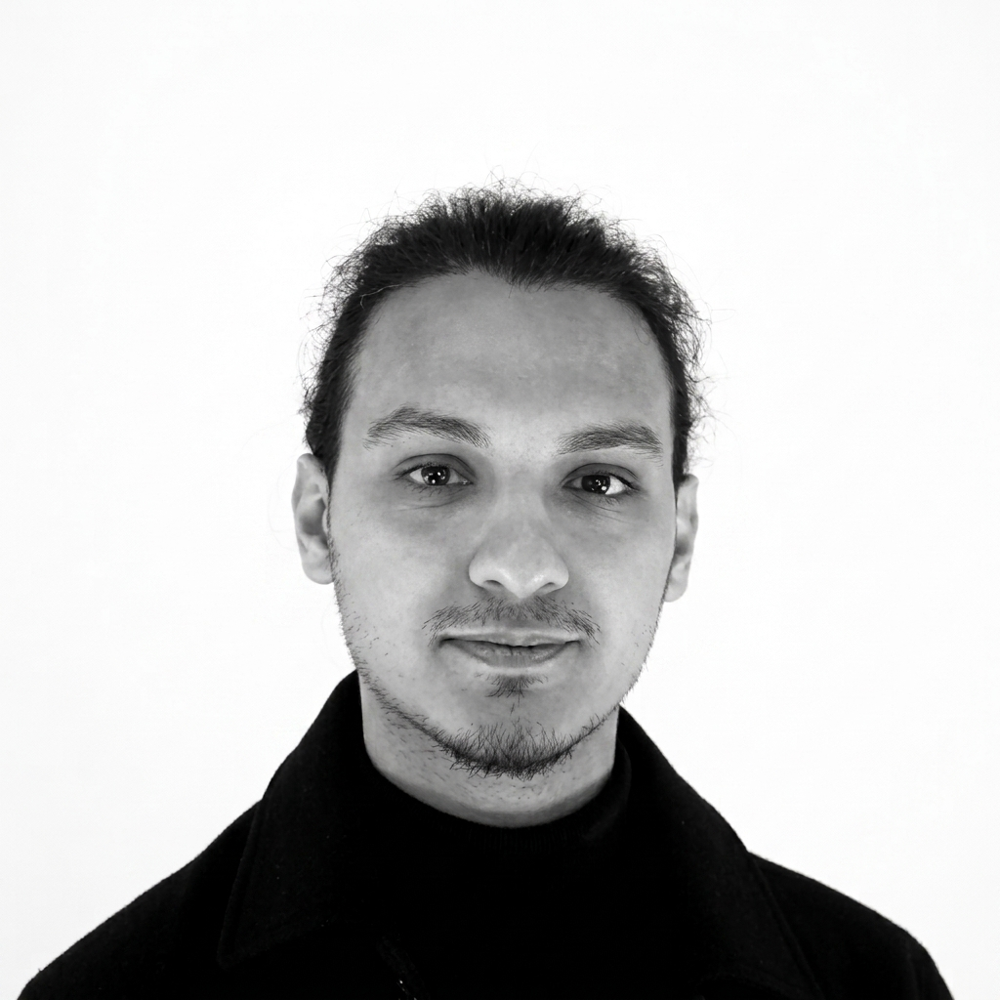
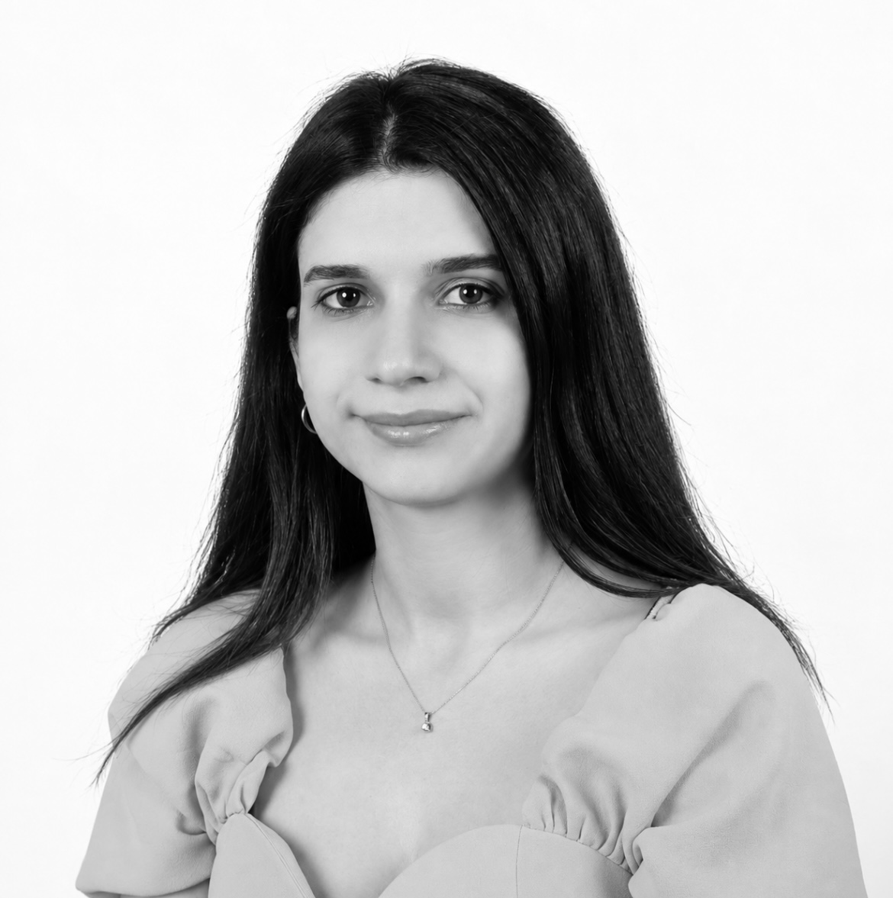

eodo is a multidisciplinary architecture and design practice based in Istanbul and Paris. It approaches architecture not merely as the creation of buildings, but as a space for thinking, research, and redefining the spatial experience. By focusing on context, materials, and the perspectives brought by different disciplines, it develops a collective language of creation.

Emre Eren Özaşık
// Co-Founder, Istanbul
He graduated from Yıldız Technical University with a degree in Architecture. He views spatial practice as an exploration driven by context, material, and spatial experience. His approach is shaped by an ongoing inquiry into how space interacts with its users and environment. Throughout his academic and professional practice, he has collaborated within multidisciplinary teams on national and international architectural competitions, earning various recognitions. He continues to engage in diverse project environments that encourage collaborative thinking. This emphasis on collective production remains a core element of his design methodology. His work focuses on solutions rooted in their local geography, creating sustainable spaces defined by a strong sense of belonging.

Zehra Öykü Çimoğlu
// Co-Founder, Paris
She graduated from Kadir Has University with a degree in Architecture and pursued her master's studies at École nationale supérieure d'architecture de Paris-La Villette. She views spatial practice as an exploration driven by context, material, and spatial experience. Throughout her academic and professional practice, she has collaborated with various architectural firms based in Turkey and France, contributing to diverse design projects and competitions. This emphasis on collective production remains a core element of her design methodology. Her work focuses on solutions rooted in their local geography, creating sustainable spaces defined by a strong sense of belonging.
Our Collaborations
Aleyna İnal · Doğa Döngel · Büşra Karamehmetoğlu · Serhat Oğuz Döngel · Sadık Metin Okay
Awards
- 2025 — 1st Prize, Bursa Setbaşı-Yeşil-Emirsultan Historical Axis Urban Design Competition (with BARK ARCHITECTS)
- 2023 — Honorable Mention, MDC'23 Architectural Competition
- 2022 — 1st Prize, 55 Hours Competition, Chamber of Architects Bakırköy
- 2022 — Good Application Award, Design The Sustainable Future: Biomimicry, Rönesans Holding